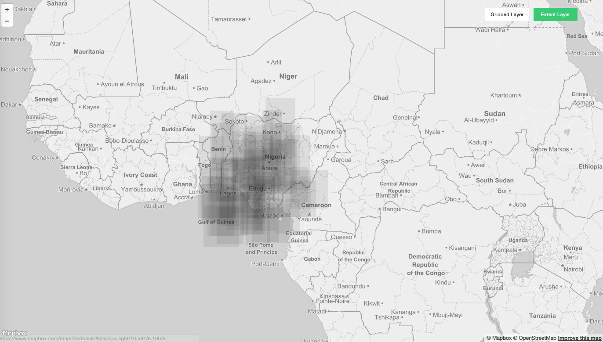
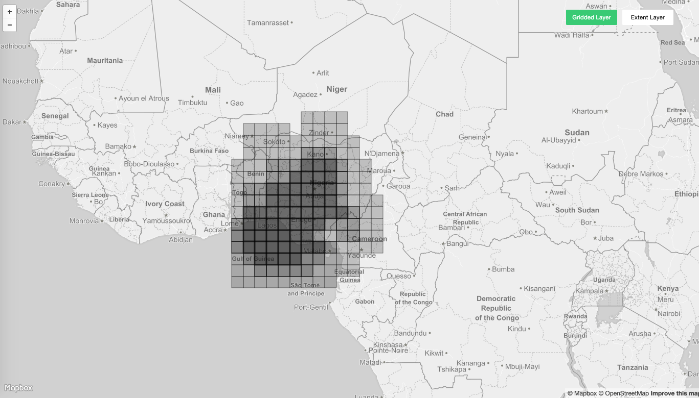
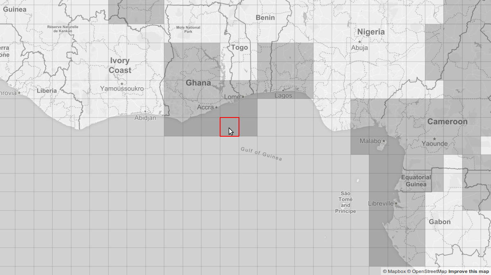
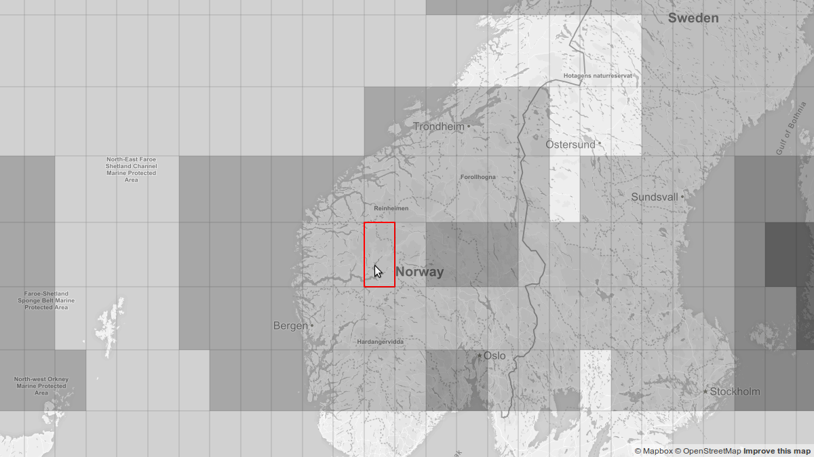
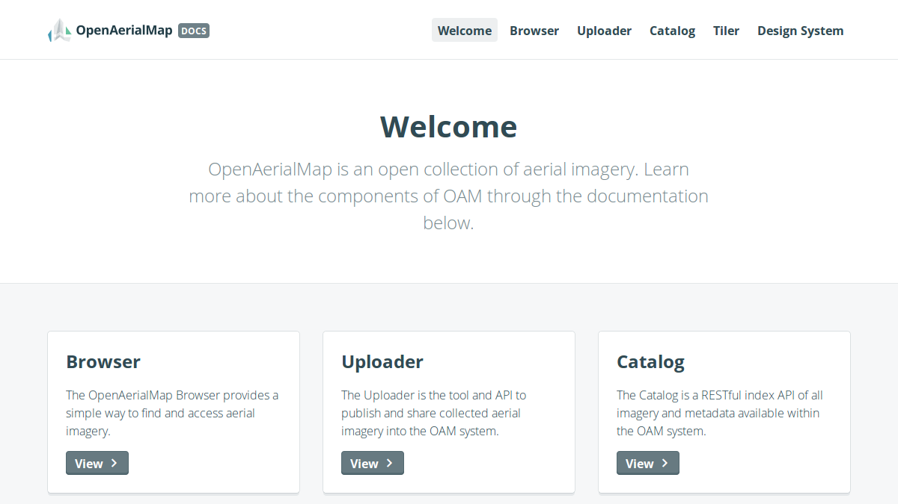

OpenAerialMap
open source imagery browser
Daniel da Silva
 Development Seed
 http://github.com/danielfdsilva
http://github.com/danielfdsilva
 @danielfdsilva
@danielfdsilva
What problems are we trying to solve?
- Lack of imagery for disaster response
- Although more and more available is not always easy to find
- Need of a simple way to find and access the imagery
Mamou, Guinea
Ebola Outbreak29 hours, 68 contributors, 20 105 buildings
Open Imagery Network
- Network of open licensed imagery (CC-BY-4.0)
- Distributed system
- Anyone can contribute with imagery
2 ways to contribute
- Host an OIN node
- Upload imagery using the uploader
What is OAM?
Set of tools for finding and sharing imagery
Catalog
Indexes imagery from OIN and makes it available through the API
{
"meta": {
"provided_by": "OpenAerialMap",
"license": "CC-BY 4.0",
"website": "http://beta.openaerialmap.org",
"page": 1,
"limit": 1,
"found": 2371
},
"results": [
{
"_id": "571975932b67227a79b4faf4",
"uuid": "http://hotosm-oam.s3.amazonaws.com/16APR19153537-PS8b-055228871010_01_P002.tif",
"geojson": {
"type": "Polygon",
"coordinates": [...],
"bbox": [...]
},
"meta_uri": "http://hotosm-oam.s3.amazonaws.com/16APR19153537-PS8b-055228871010_01_P002.tif_meta.json",
"properties": {
"thumbnail": "http://hotosm-oam.s3.amazonaws.com/16APR19153537-PS8b-055228871010_01_P002.tif.thumb.png",
"tms": "http://oam-tiles.s3.amazonaws.com/ecuador-earthquake-priority-1.2/{z}/{x}/{y}.png",
"sensor": "GE-01"
}
(...)
}
]
}
The Browser as a solution
Demo time!
The grid
UI/UX considerations
Using footprints
Choropleth grid
The grid
building process
Coordinates grid
Coordinates grid
Pixel perfect grid
Zoom independent grid
Tech stack
Mapbox + ReactThe OAM components
Uploader
https://upload.openaerialmap.org/

Documentation
Design System
Roadmap
- Simplify the contribution process
- Lower the barrier to share and publish
- Get more organizations to have OIN nodes
Get Involved
Thank you!
Questions?
http://github.com/danielfdsilva
@danielfdsilva